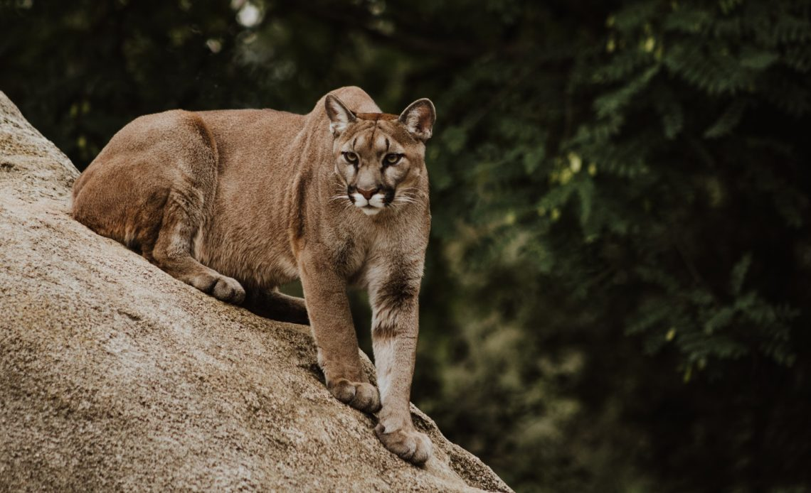
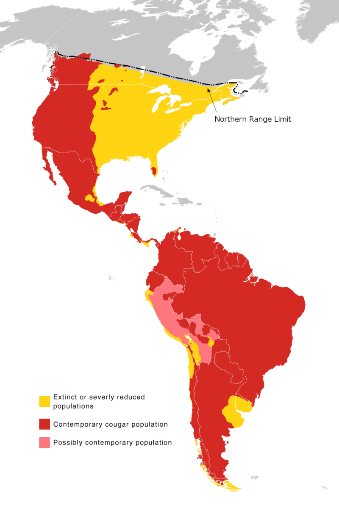
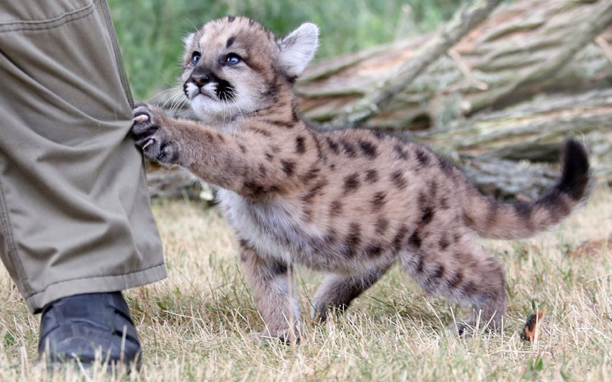
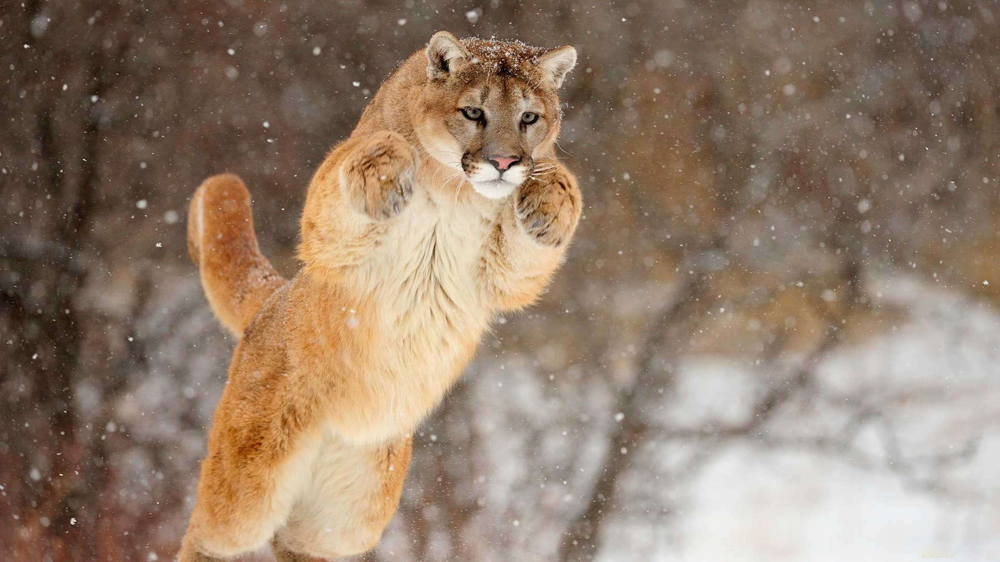

Цікаві факти про пум

Пума (або кугуар, або гірський лев) – четвертий за величиною представник сімейства котячих у світі та другий в Америці,
більший за неї лише тигр, лев та ягуар.
Стара класифікація, що зберігалася до 1999 року, заснована на морфологічних характеристиках, виділяла до 30 підвидів пуми. Сучасна класифікація,
заснована на генетичних дослідженнях, виділяє 7 підвидів пуми.
Де мешкає пума
Пума живе у Південній та Північній Америці. Історично ареал пуми був найбільшим серед усіх наземних ссавців Америки. Спочатку пуми зустрічалися майже повсюдно від півдня Патагонії до південного сходу Аляски; область її поширення досить точно
збігалася з ареалом її головного видобутку різних оленів.
Зараз на території США та Канади пума збереглася переважно у гористих західних районах. На сході Північної Америки пума була майже повністю винищена; виняток становить крихітна популяція підвиду Флоридської пуми,
що мешкає у Флориді.
В даний час ареал пуми тягнеться від Юкона (гориста і малонаселена територія на північному заході Канади) і на південь, охоплюючи майже всю Південну
Америку до Патагонії.

Про зовнішній вигляд пуми
Пума досягає в довжину 100-180 см при довжині хвоста 60-75 см, висоті в загривку 60-90 см і масі до 105 кг (самці). Зазвичай нормальний самець великого підвиду важить 60-80 кг.
Самки дрібніші за самців приблизно на 20–30 %.
Хутро у пум густе, але коротке і грубе. Поряд з ягуарунді, пуми – єдині американські кішки, які забарвлені однотонно; звідси наукова назва цього виду «concolor», що перекладається з латини як «однокольоровий». У дорослих пум забарвлення сірувато-коричневе або коричнево-жовте; нижня сторона тіла світліша за верхню. В цілому, забарвлення
пум нагадує забарвлення їх основного видобутку – оленів.
Забарвлення дитинчат пуми відрізняється від забарвлення дорослих особин. Їхня шерсть густіша, покрита темними плямами, смугами на передніх і задніх кінцівках, та кільцями на хвостах. Новонароджені пуми розплющують очі через 2 тижні після народження. Спочатку у них блакитний колір очей, але через півроку він поступово змінюється на коричневий чи бурштиновий. Плями на шерсті починають вицвітати через 9 місяців життя,
і повністю сходять до двох років.
Відомо про існування світлих і навіть білих пум, а також темно-коричневих, що зустрічаються переважно у Латинській Америці.
Пуми-альбіноси та меланісти в природі невідомі.

Спосіб життя пуми
Пуми зустрічаються в різних ландшафтах: в гірських хвойних лісах, в тропічних лісах, на трав'янистих рівнинах, в пампасах (степах), на заболочених низовинах і взагалі в будь-якій місцевості, яка надає їм достатню кількість їжі і притулок. Однак у Південній Америці пуми намагаються уникати заболочених районів та низин,
які облюбували ягуари.
Ці тварини чудово пристосовані до життя на пересіченій місцевості. Так, завдяки мускулистим кінцівкам, вони здатні робити стрибки завдовжки до 6 метрів і заввишки до 2,5 метра, бігти зі швидкістю до 50 км/год (хоч і короткі дистанції). Пума легко пересувається гірськими схилами, відмінно лазить по деревах і скелях
і при необхідності добре плаває.
Пуми ведуть строго одиночний спосіб життя (виключення становлять пари у шлюбний період і матері з кошенятами). Мисливська ділянка самки пуми займає від 26 до 350 км і зазвичай знаходиться на периферії території самця. Ділянки самців займають від 140 до 760 км і ніколи не перетинаються. Дорослих самців рідко бачать разом; виняток становлять молоді пуми, які щойно покинули матір. Усередині своєї ділянки пуму здійснює сезонні переміщення, зимуючи та літаючи у різних його частинах. Межі території мітяться сечею
та фекаліями, а також подряпинами на деревах.
У природі пуму живе 10-13 років, у зоопарках – до 20. Тривалість життя у самок
вища, ніж у самців.
